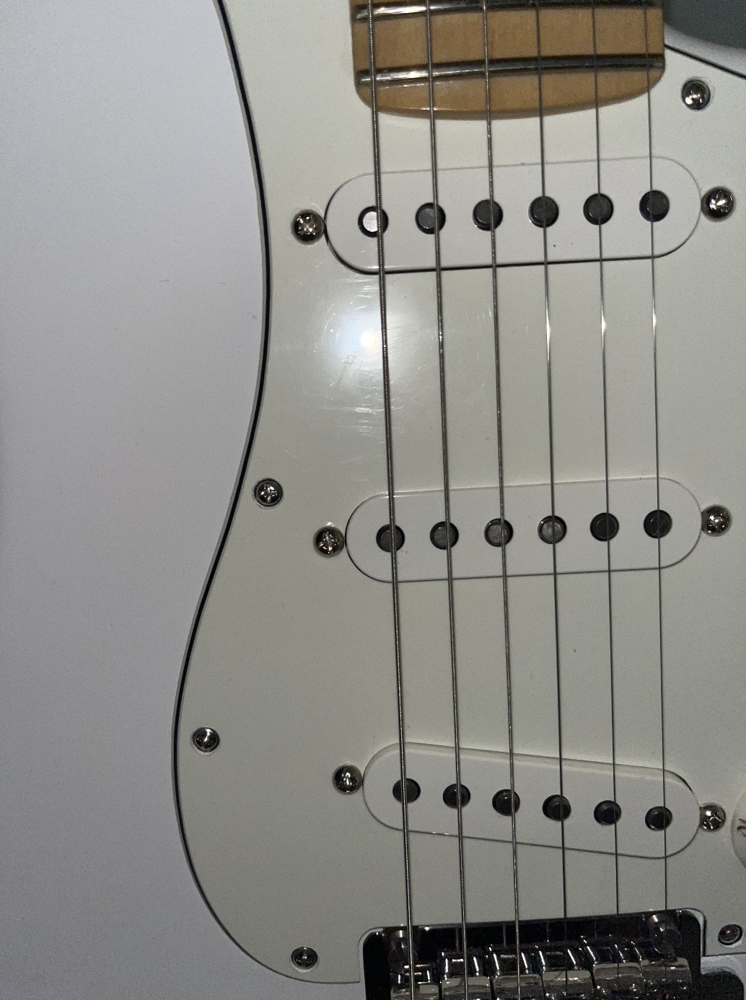
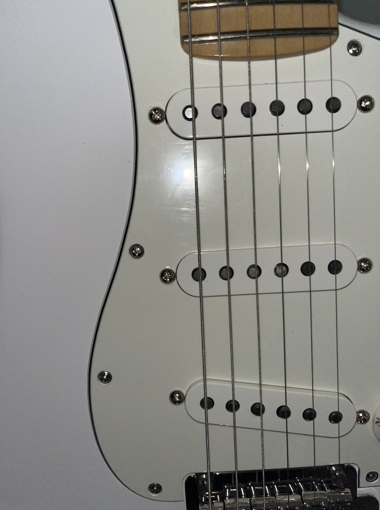
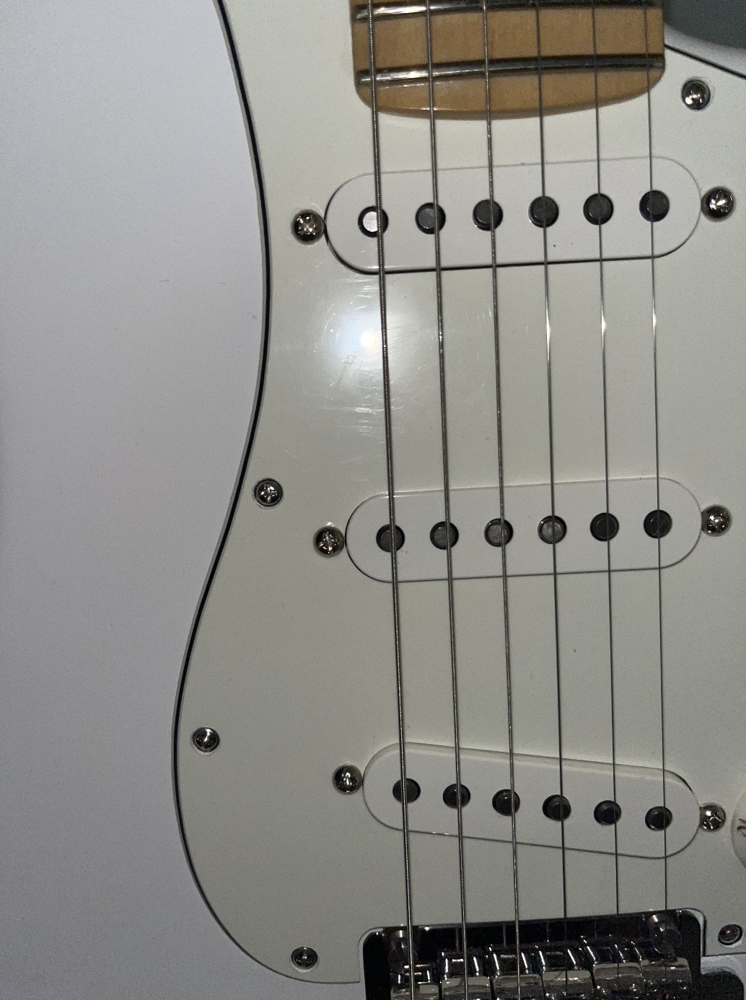
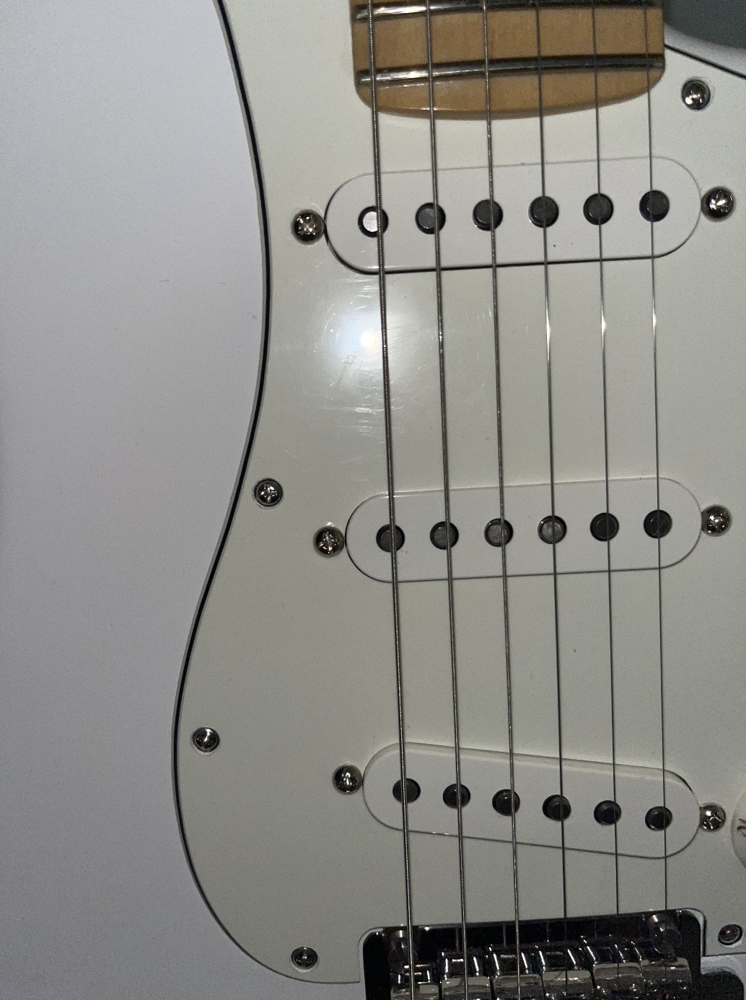

 

I started learning guitar in junior high school and had one lesson a week, after two years of learning I did not take lessons from the teacher but taught myself
But my first contact was with classical guitar, and later with folk guitar. They are both very similar in their playing techniques except for the tone.
And the electric guitar was something I only bought when I came to New York, and I didn't know anything about it before that.
If the electric guitar is not connected to the electric box it can only make a small sound itself.